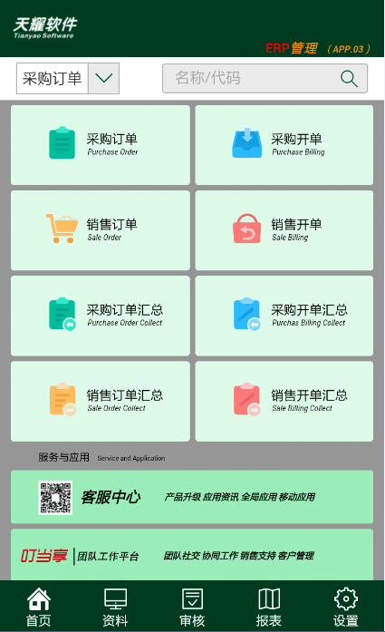

速达移动客户端，可根据系统输出简易报表，能够提供单据详情、资金往来、商品库存等信息的查询，支持采购单据和销售单据的下达和业务查找，在为企业开展移动商务、移动办公方面，提供最优的解决方案。
移动客户端的界面（如图），速达5000提供了“首页、资料、审核、报表、设置”五项主要功能模块。主页分为：采购订单、采购开单（包括采购收货、现款采购、采购退货）、销售订单、销售开单（包括销售发货、现款销售、销售退货）的功能项，分别可以用来新增相应的业务报表；上方可通过关键词查询系统的各类业务单据。
图一：
